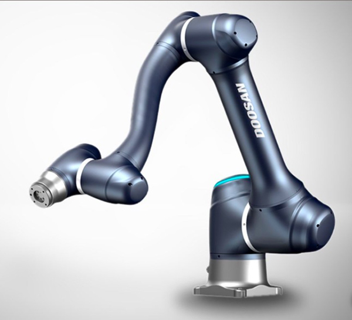
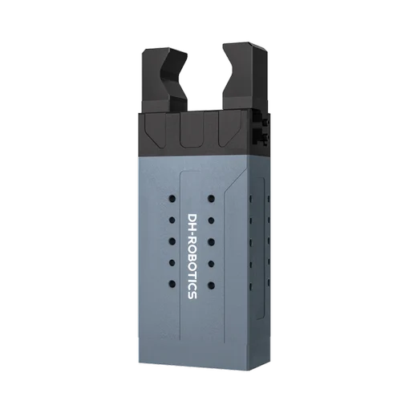
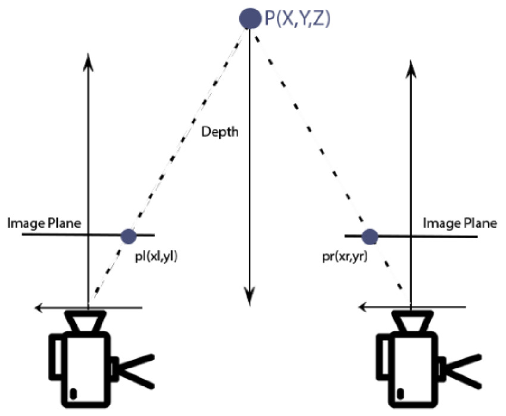

Autonomous Harvest via YOLO Detection & Depth-Guided Control
An autonomous robotic system that uses a wrist-mounted Intel RealSense RGB-D camera, a custom-trained YOLOv8 model, and a 6-DOF Doosan A0509 cobot to detect and harvest bananas in real time — with statistically validated depth estimation and iterative approach control.
This project builds an end-to-end autonomous fruit-harvesting pipeline. A Doosan A0509 collaborative robot arm, equipped with a wrist-mounted Intel RealSense D435i camera and a DH Robotics parallel gripper, scans its environment by sweeping Joint 5. When the onboard YOLOv8 detector spots a banana with sufficient confidence, the system enters a 2-second depth-validation window — collecting multiple depth readings, rejecting statistical outliers (σ-filtering), and averaging the survivors to obtain a stable 3D target. The robot then approaches iteratively, recalculating depth at each 50 mm step via a hand-eye calibration matrix, before closing the gripper and returning to rest.
Detect ripe and unripe bananas in real time using a YOLOv8 model trained on a custom dataset, with per-class confidence thresholding.
Use the RealSense depth stream to obtain robust 3D fruit positions, validated over a 2-second window using σ-based outlier rejection.
Transform detected fruit coordinates from the camera frame to the robot's base frame using a pre-calibrated T_tool_cam extrinsic matrix.
Navigate the arm toward the target in 50 mm steps with mid-approach depth recalculation to correct for noisy initial estimates.
Drive the DH Robotics parallel gripper via Modbus RTU over USB to open, close, and recover autonomously during the pick sequence.
Provide an operator Tkinter interface showing the annotated camera feed, Cartesian position, joint angles, and manual control buttons.
| Course Unit | Application in This Project |
|---|---|
| Computer Vision | YOLOv8 fruit detection, bounding box extraction, depth deprojection |
| Machine Learning | Custom YOLO model training on labelled banana dataset (ripe / unripe classes) |
| Robotics | 6-DOF manipulator kinematics, joint-space and Cartesian-space motion commands |
| Control Systems | Iterative step-based approach controller with mid-approach recalculation loop |
| Signal Processing | Statistical outlier rejection (σ-filtering) of noisy depth readings |
| Systems Integration | ROS 2 node, Tkinter GUI, camera threads, Modbus gripper driver — all fused in real time |
Data flows from the wrist camera through detection and 3D localisation, is validated statistically, transformed into robot coordinates, and executed as a closed-loop approach sequence ending in a grip.
ultralytics) was fine-tuned on this dataset; the best checkpoint is stored at runs/detect/train6/weights/best.pt.model(frame, verbose=False) on every GUI tick (≈ 30 ms cadence).search_active = True — set after the robot has settled at its search pose — to prevent false triggers during motion.target_locked), detection is suppressed for the rest of the pick cycle.rs2_deproject_pixel_to_point(intrinsics, [cx, cy], depth) converts the bounding-box centroid pixel into a metric 3D point (X, Y, Z) in the camera frame.depth ≤ 0 or depth ≥ 2.0 m are discarded as out-of-range.−Z) to align with the robot's coordinate convention.banana_readings.filter_and_average(readings, sigma=2.0) is called.T_tool_cam.txt and printed for operator verification.get_current_posx() returns the TCP pose as [x, y, z, rz1, ry, rz2] (ZYZ Euler, mm + degrees).doosan_tcp_to_matrix(tcp) converts this into a 4 × 4 homogeneous matrix T_base_tool.P_base = T_base_tool @ T_tool_cam @ P_cam.self.scanning = False) and the approach begins.movel()._recalculate_banana_depth) is obtained.dh_gripper.open() is called, the arm pauses 3 s, then returns to REST_JOINTS.close → rest shortcut is used.)
| Type | Collaborative Robot (Cobot) |
|---|---|
| Brand | Doosan Robotics |
| Model | A0509 |
| Axes | 6 |
| Payload | 5 kg |
| Reach | 900 mm |
| Repeatability | ±0.030 mm |
| Weight | 21 kg |
| Speed (rated payload) | 1 m/s |
| IP Rating | IP54 |
| Operating Temperature | −5 to 45 °C |
| Mounting | Any orientation |
| Controller | Doosan Controller, DART Platform |
| Power Supply | DC 24 V / Max 3 A |
| Power Consumption | 370 W |
| Communication | Digital I/O, RS-485, ModbusTCP, PROFINET, EtherNet/IP, TCP/IP |
| Safety | STO / SS1, Joint Position & Speed Monitoring, TCP Speed Monitoring, Collision Detection |
| Certifications | ISO/TS 15066, ISO 10218-1/-2, PL d, SIL 2, CE, NRTL, KCs |

The DH Robotics parallel gripper serves as the end-effector and is controlled via Modbus RTU over a USB serial link (/dev/ttyUSB0, 115 200 baud). A custom Python driver wraps minimalmodbus with auto-recovery on slave fault.
0x0103 (0 = open, 1000 = fully closed)0x0101) and force (register 0x0102) configurable0x0100SlaveReportedException
pyrealsense2.| Feature | Value |
|---|---|
| Depth Technology | Active Stereo Vision |
| Depth Range | ~0.2 m – 10 m |
| RGB Resolution (configured) | 640 × 480 |
| Depth Resolution (configured) | 640 × 480 |
| Frame Rate | 30 FPS |
| Interface | USB 3.0 |
| Valid Depth Range (code) | 0 – 2.0 m (out-of-range frames discarded) |
rclpy.init() and runs as a ROS 2 node named banana_gui under namespace dsr01.DR_init, which patches the ROS node handle into the robot SDK.threading.Thread, decoupled from the GUI event loop.threading.Lock().
The DSR_ROBOT2 package exposes a Python interface to the Doosan DART controller over ROS 2.
The project uses the following API functions:
Disables detection, drives the arm to SEARCH_POSX via movel(), then spawns the scan_j5() thread and re-enables detection.
Sweeps Joint 5 from −90° to +90° in 5° steps, continuously panning the wrist camera to find fruit in the workspace.
Core 30 ms GUI loop. Runs YOLO on the latest frame, manages the depth-collection state machine, updates the annotated video display.
On first banana sighting, initialises the 2-second depth reading buffer and timestamps the start of the validation window.
Calls filter_and_average() on the buffer; if enough clean readings remain, extracts a stable 3D target and triggers move_to_banana().
Chains T_base_tool @ T_tool_cam @ P_cam to transform a camera-frame 3D point into the robot base frame in mm.
Iterative approach loop: 50 mm steps with mid-step depth recalculation, final 150 mm hold-off, wrist dip, and grip sequence.
σ-based outlier rejection on a list of (X, Y, Z) readings; discards values beyond 2σ per axis and averages the survivors.
Halts scanning and detection, runs a gripper open/close test cycle, then drives the arm to REST_JOINTS in joint space.
Week 1
Hardware Setup & Dataset Collection
Week 2
YOLO Model Training & Validation
Week 3
Hand-Eye Calibration & Depth Pipeline
Week 4
Approach Control & Gripper Integration
Week 5
Full System Integration & Testing
YOLOv8 achieved reliable detection of bananas at the 0.70 confidence threshold across varied lighting and orientations.
The 2-second σ-filter window successfully eliminated noisy depth spikes, providing a stable 3D target before every approach.
All subsystems — ROS 2, camera thread, YOLO, gripper driver, and GUI — ran concurrently without deadlock or frame drops.
Depth accuracy degraded near the edges of the RealSense's valid range; the mid-approach recalculation loop was added to compensate.
Multi-fruit prioritisation, stem detection for precise plucking angle, and integration with a mobile base for field deployment.
CB.SC.U4AIE24002
CB.SC.U4AIE24016
CB.SC.U4AIE24045
CB.SC.U4AIE24061